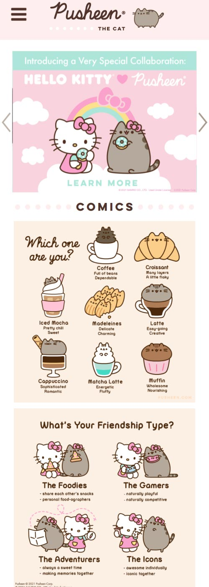
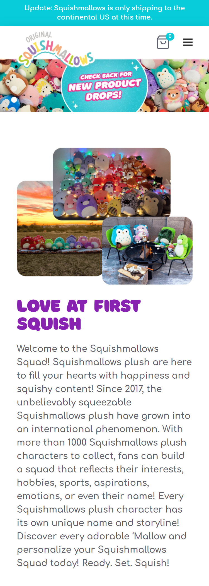

Repetition
Pusheen the Cat
pusheen.com Pusheen's overall theme, fonts, and colors are consistent throughout the whole website. Use of pastels in the same range as well as brown and white for font colors. The padding is also consistent. The use of repetition really makes it feel like it all goes together.
Contrast
Hot Topic
hottopic.comThe use of black and white provides stark contrast, such as in the Hot Topic logo. It really makes things clear and stand out. It’s easy to tell what’s going on and where you can go find what you need. Everything is easy to see and easy to read.
White Space and Clean Design
Squishmallows
squishmallows.com Squishmallow's website is bright and colorful, but the use of white space allows the site to not feel too crowded with content and allows space between text and images. It lets the eye draw naturally where it needs to without making you feel overwhelmed.